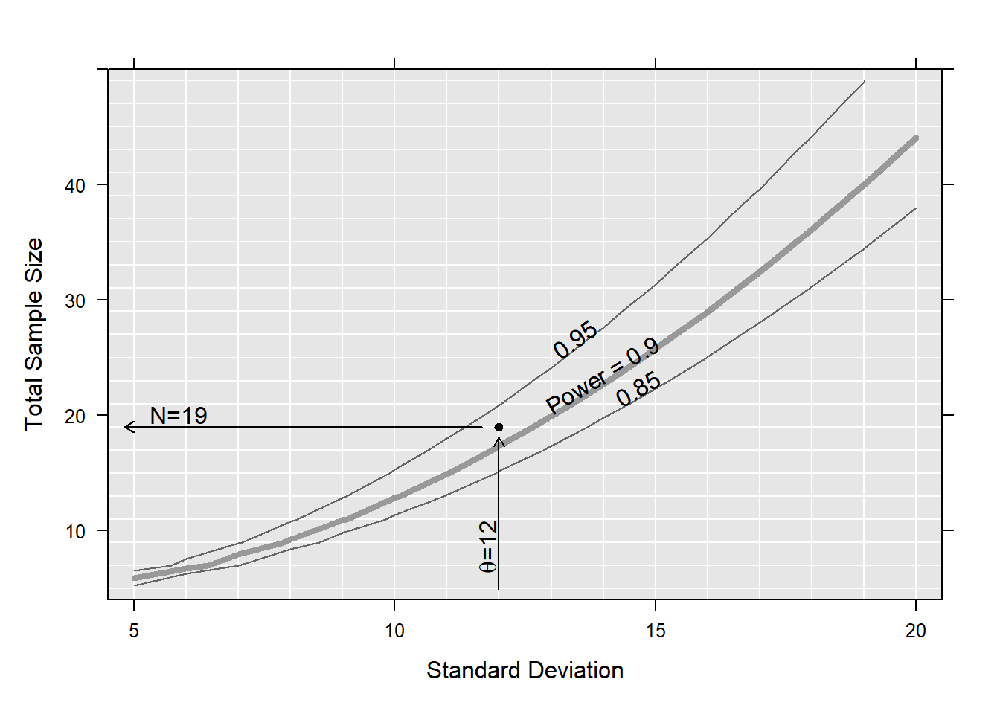
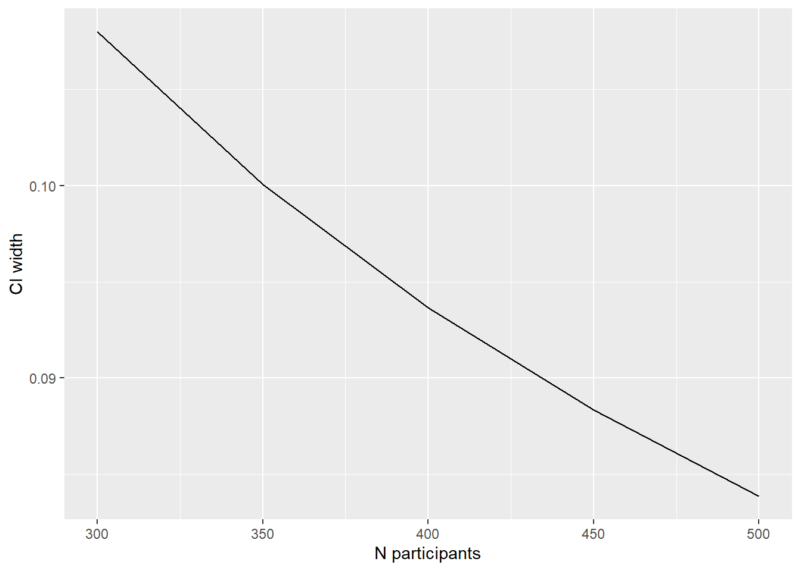

This page is under development. Changes should be expected.
Background
In clinical research, one of the first technical hurdles to a project is the sample size calculation - how many participants would you need to include to be able to answer your research question? They are required by funding bodies, ethics and safety regulators. They can also be important to the sponsor - without a good sample size calculation, how can you tell if you will be able to achieve your aims?
Speaking with a statistician about sample size calculation can be frustrating for both parties. The investigator just wants a number that they can write in their proposal/protocol/grant application. The statistician cannot give a number without various details. Hence, a good understanding from both sides is primordial. The aim of the study has to be well defined and all the needed assumptions educated guessed.
There are two important concepts to understand before we move forward: Type 1 error and Type 2 error.
Type 1 error
A type 1 error is the rejection of the null hypothesis when it is actually true (i.e. a false positive - e.g. a pregnant man). This is controlled by the selection of \(\alpha\), the test significance level, which is normally set at 0.05 (which represents incorrectly rejecting the null hypothesis 5% of the time). For more exploratory analyses, it might be relaxed it to 0.1.
Type 2 error
Type 2 errors are failing to reject the null hypotheses when they is actually false (i.e. a false negative - e.g. telling a pregnant woman that is not pregnant). This is controlled by the power, which is generally set at 0.8. Power is the probability of correctly rejecting the null hypothesis when the alternative hypothesis is true.
Two main paradigms:
Null hypothesis significance testing (NHST)
The aim is to assess if there is a statistical difference between e.g. two groups. For example
does medication X lower Y more than medication Z
does surgery X results in fewer Y than surgery Z
Precision based approaches
The focus is rather on estimating a quantity to a given accuracy. For example, we might expect that 40% of people have a given event within a certain time frame, but we want to estimate that 40% with a specific precision, in other words within a certain interval, e.g. 5% (2.5% on either side). We are interested in the width of the confidence interval (CI). It is also possible to estimate width of the CI for differences (e.g. mean differences) and relative effects (e.g. odds ratios, relative risks).
What the statistician needs to know
What is the main comparison?
Between two groups is the most common (e.g. intervention vs control).
What is the primary endpoint?
what type of variable is it? Continuous? Binary? Time-to-event?
when is it measured? Thirty days? Six months? One year?
What effect do you expect to see?
if you have continuous data, will the difference in means be 10, 20, …, 100?
if you have binary data, what proportion of events do you expect in the groups?
How variable will the endpoint be?
For continuous outcomes, standard deviations are typically called for. This is less relevant if you have a binary endpoint.
Quiz
Here is a short quiz to check your understanding…
Question 1: In a court room, the defendant is incorrectly sentenced to prison. This is an example of…
A. A type 1 error
B. A type 2 error
Answer
A is the correct answer. The defendant is innocent, so sentencing them to prison is wrong, a false positive.
Question 2: Type 2 errors are controlled by
A. Test significance
B. Larger sample size
C. Power
D. Smaller variation between participants
Answer
B or C - a larger sample increases power which reduces the risk of a type 2 error
Question 3: You suspect that there is a difference between treatments and want to quantify that difference to within a certain margin. What paradigm are you in?
A. Null-hypothesis testing
B. Bayesian
C. Precision
D. Frequentist
Answer
C - you’re not testing a difference, just trying the estimate the quantity to within a given limit
Question 4: Continuing from the Question 3. Suppose instead that you want to test if one treatment has a higher mean value of an outcome than the other treatment. What information would the statistician need to perform a sample size calculation? Check all that might apply.
A. The cost of determining the outcome
B. The mean value of the outcome in the relevant population
C. An estimate of the variability within the population
D. An estimate of the difference you expect to see between treatments
E. The number of individuals with the condition that pass through your institution per year
Answer
B, C, and D are all important. E can also be useful for approximating trial duration.
Example(s)
Here we present a couple of very short examples of how sample size calculations can be performed, although we do recommend discussing your project with a statistician.
The NHST framework
Suppose we want to estimate the mean difference between two groups (intervention vs placebo) and would like to be able to test it against “no difference”. We have to define which difference will be clinically relevant to test. Let assume that a difference of 20 between both groups is clinically relevant. We also need to guess in an educated way the standard deviation (SD) of the outcome in the groups. Let assume a SD of 12 in each group. We also have to set the power we want to achieve and the probability of type I error (alpha) we will allowed. In this example a power of 90% with a two-sided alpha of 5% can be reached with a sample size of 18, i.e. 9 participants in each group, to test if this difference is equal to null.
Two-sample t test power calculation
n = 8.649245
delta = 20
sd = 12
sig.level = 0.05
power = 0.9
alternative = two.sided
NOTE: n is number in *each* group
If the difference between both groups is smaller the requested sample size to reach the same power with all the other parameters as above will be larger. Similarly, increasing the larger variation around the mean (larger standard deviation) also increases the sample size.
Two-sample t test power calculation
n = 31.25372
delta = 10
sd = 12
sig.level = 0.05
power = 0.9
alternative = two.sided
NOTE: n is number in *each* group
Multiple plausible scenario can be investigated, by varying some parameters. The sse package (Fabbro (2021)), provides a mechanism to create multiple scenarios and examine power in each, together with functions to aid reporting. sse is very flexible, but does require some programming.
library(sse)## defining the range of n and theta to be evaluatedpsi <-powPar(# SD valuestheta =seq(from =5, to =20, by =1),# sample sizesn =seq(from =5, to =50, by =2),# group meansmuA =0,muB =20)## define a function to return the power in each scenariopowFun <-function(psi){power.t.test(n =n(psi)/2,delta =pp(psi, "muA") -pp(psi, "muB"),sd =theta(psi) )$power}## evaluate the power-function for all combinations of n and thetacalc <-powCalc(psi, powFun)## choose one particular example at theta of 1 and power of 0.9pow <-powEx(calc, theta =12, power =0.9)## drawing the power plot with 3 contour linesplot(pow,xlab ="Standard Deviation",ylab ="Total Sample Size",at =c(0.85, 0.9, 0.95))

For additional details, see the sse package documentation on CRAN.
The precision based framework
Suppose we want to estimate the proportion of deaths within 30 days of a myocardial infarction (MI). Law, Watt, and Wald (2002) estimated that 36% (31% - 40%) of patients died within 30 days of an MI. If we want to replicate their study, we can estimate the number of participants that would be necessary to achieve a CI which is 9% wide. Members of the SCTO Statistics and Methodology platform created an R package specifically for this problem called presize (Haynes et al. (2021)). It is available on CRAN or as an easy to use shiny application.
The relevant function in presize is the prec_prop function. Plugging in the numbers from above, we can see that we require 434 participants (column n) to yield a confidence interval from 31.6% (lwr) to 40.6% (upr).
sample size for a proportion with Wilson confidence interval.
p padj n conf.width conf.level lwr upr
1 0.36 0.3612296 433.5577 0.09 0.95 0.3162296 0.4062296
NOTE: padj is the adjusted proportion, from which the ci is calculated.
If we know that we can only afford to follow 300 participants, we can see what the confidence interval would be in that case too, via the n argument (instead of cond.width):
prec_prop(p =0.36, n =300)
precision for a proportion with Wilson confidence interval.
p padj n conf.width conf.level lwr upr
1 0.36 0.36177 300 0.1080014 0.95 0.3077693 0.4157707
NOTE: padj is the adjusted proportion, from which the ci is calculated.
It’s also possible to check multiple scenarios, by passing multiple values to a parameter. Below we vary the number of participants (what CI width is possible to determine with that number of participants?):
prec_prop(p = .36, n =c(300, 350, 400, 450, 450))
precision for a proportion with Wilson confidence interval.
p padj n conf.width conf.level lwr upr
1 0.36 0.3617700 300 0.10800136 0.95 0.3077693 0.4157707
2 0.36 0.3615199 350 0.10007265 0.95 0.3114836 0.4115562
3 0.36 0.3613317 400 0.09366763 0.95 0.3144979 0.4081655
4 0.36 0.3611850 450 0.08835346 0.95 0.3170083 0.4053617
5 0.36 0.3611850 450 0.08835346 0.95 0.3170083 0.4053617
NOTE: padj is the adjusted proportion, from which the ci is calculated.
The results can also be plotted easily, which is particularly useful when running multiple scenarios.
library(ggplot2) # for plottinglibrary(magrittr) # for 'piping'prec_prop(p = .36, n =c(300, 350, 400, 450, 500)) %>%as.data.frame() %>%ggplot(aes(x = n, y = conf.width)) +geom_line() +labs(x ="N participants", y ="CI width")

For additional details and examples, see the presize website.
Conclusion
Sample size calculation is a very important part of the study planning process. To make the most of your meeting with the statistician, have the answers to the questions mentioned above.
Haynes, Alan G., Armando Lenz, Odile Stalder, and Andreas Limacher. 2021. “‘Presize‘: An r-Package for Precision-Based Sample Size Calculation in Clinical Research.”Journal of Open Source Software 6 (60): 3118. https://doi.org/10.21105/joss.03118.
Law, Malcolm R., Hilary C. Watt, and Nicholas J. Wald. 2002. “The Underlying Risk of Death After Myocardial Infarction in the Absence of Treatment.”Archives of Internal Medicine 162 (21): 2405–10. https://doi.org/10.1001/archinte.162.21.2405.